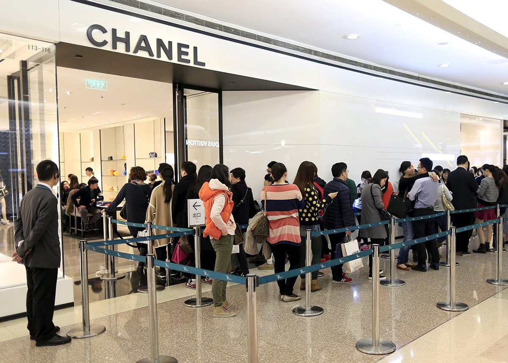
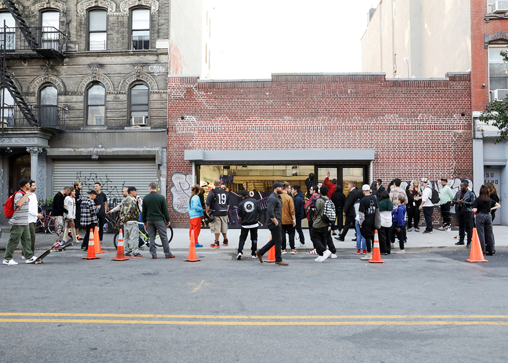
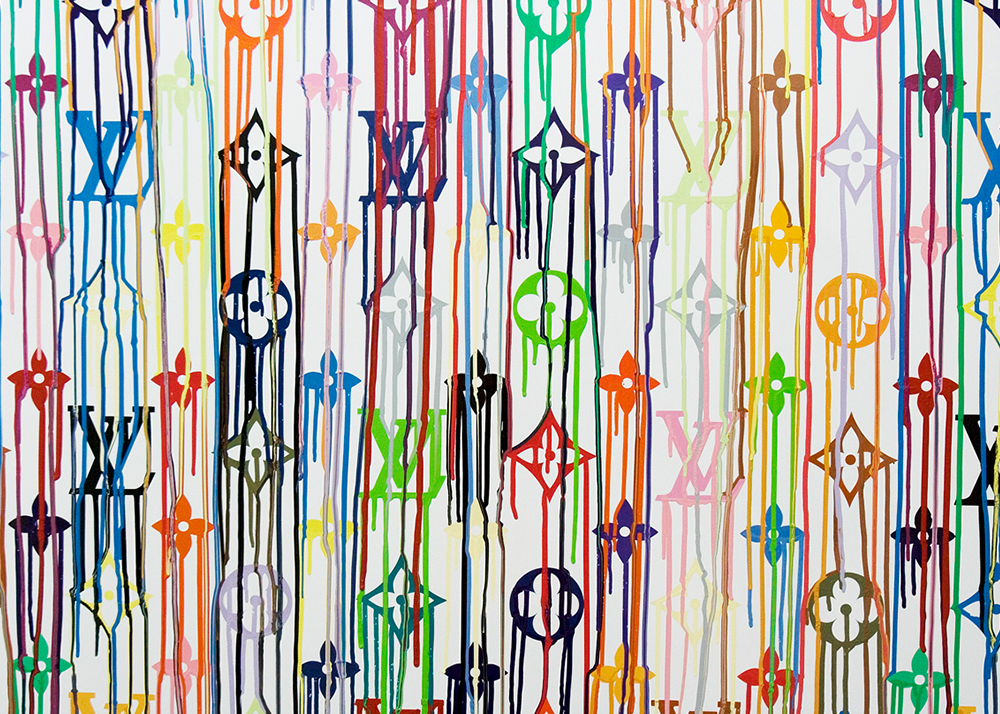
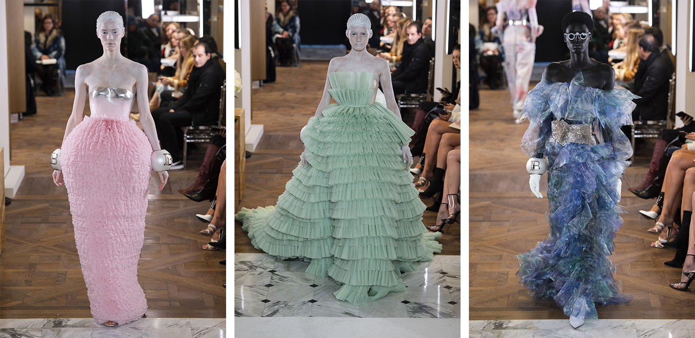

NEW ERA OF FASHION:
the Marriage between High Fashion and Streetwear
2018 Writing
“You got a number?” This is the most frequently asked question here at the new Brooklyn Supreme store. On October 5th, 2018, I took a 10 minutes walk from my apartment in Williamsburg to see its grand opening in the hypest center of New York. A long line wraps around the outside of the store full of rabid fans known as hypebeasts. They were equipped from head to toe with Supreme items. Several security officers were helping to instruct enthusiastic customers.1 The scene closely resembled the queues I saw back in Hong Kong every weekends in front of big names such as Louis Vuitton and Chanel. According to fashion writer Lauren Cochrane from the Guardian that “on a ‘drop day’, the traffic on the Supreme site can increase by as much as 16,800%.”2
 Lines outside Chanel in Hong Kong Lines outside Supreme Brooklyn.
The link between high fashion and streetwear is not limited to their popularity. A near symbiotic relationship exists between the two styles: high fashion gains broader range of audience with the new hipness while streetwear is gradually accepted as serious fashion with better understanding of its cultural message. From early as 1966, when Yves Saint Laurent opened the unprecedented boutique selling its ready-to-wear collection, designers were simultaneously beginning their investigation into streetwear.3 In the 80s, communities such as Hip-hop artists skateboarders, and young Latino and black fashion lovers fused music and urban life to their fashion sense. High fashion designers’ general interest in the street style has less to do with the scarcity of these kinds of clothes, but the “fresh dressed” aesthetics that emerged from this specific group.4 Since then, more interaction between streetwear and high fashion has emerged: previous Louis Vuitton menswear director Kim Jone’s collaboration between Supreme, streetwear designer Virgil Abloh’s new position at Louis Vuitton, fashion designer Demna Gvasalia’s new collection for Balenciaga and Vetements. All these relationships illustrate the marriage between streetwear and luxury fashion. Nonetheless, with diverse participants, organizers, audience and social context, each case alters the positions of high fashion and streetwear. Through analyzing Supreme and Louis Vuitton’s collaboration in 2017, and Virgil Abloh’s new position as the creative director at Louis Vuitton menswear in 2018, this essay will explore how the meaning behind the two fashion markets changes and adapts to the mainstream taste and evolving consumer habits in general. Menswear Designer and previous Louis Vuitton’s Creative Director Kim Jones knows how to make news. In spring 2017 Jones confirmed Louis Vuitton’s collaboration with the New York based skateboard brand Supreme through the launch of Fall /Winter 2017 menswear runway show.5 The collection, which included various styles of Louis Vuitton signature handbags, accessories and stationary, were sold solely at selected Louis Vuitton stores. The collaboration was the result of years of history in the making, and thus a watershed moment for the brand. Up until roughly 1997 when Marc Jacobs joined the brand, Vuitton stuck to philosophy articulated by Ogilvy, a New York based advertising and marketing agency like it was scripted from a bible. That philosophy according to Colin Mitchell,6 who supervises Ogilvy's Global Strategy and Planning Group was that “luxury brands needed to be consistent and authentic." They become cultural reference points as the world shifts." That meant Vuitton would focus on travel as their core business and nothing else since the very beginning. At the time young American fashion designer Marc Jacobs saw things differently. When he joined the company in 1997, he created the company's first ready-to-wear clothing line and worked collaboratively with many popular artists. When he unveiled Louis Vuitton’s collaboration with New York designer and artist Stephen Sprouse in 2001, it set the precedent for the new millennium.7 It was a groundbreaking move for the house, which had previously treated the famous LV monogram as sacrosanct as to keep it “consistent and authentic.”8 The neon graffiti monogram bags brought in the very rebellious attitude and sense of youthfulness that marked an exciting novel direction for both the brand and high fashion at large. Since then, the collaboration between fashion and art has only grown stronger.
Louis Vuitton x Takashi Murakami
When Kim Jones took over Vuitton's menswear collection in 2011, he started to amplify the brand's streetwear sensibilities as to develop even further the youthful design elements. Emphasis was shifted to fashion items like sneakers, track pants and graphic tees. With this history in mind, it isn’t surprising that Louis Vuitton later worked with what is now affectionately referred to by fans as the “Louis Vuitton of streetwear”- Supreme. “You can’t have the conversation of New York menswear without Supreme right now, because it’s such a massive global phenomenon,” according to Jones, the collaboration "was the logical response." Collaboration with Supreme, similar to Louis Vuitton’s collections with Stephen Sprouse and popular artists like Takashi Murakami, brings young blood to the traditional French fashion house. While Vuitton had an established brand with authority and credibility with monied clients, it was nowhere near the hipness Supreme brought to the table. Luxury brands used to be profiled with a narrow and limited audience with selective cultural and financial backgrounds. Now, they are definitely targeting a broader range of customers by collaborating with pop artists and streetwear brand. According to Dominique Muret, journalist from Fashion Network, the global luxury goods market was worth €915 billion in 2017, with 18 million consumers made up the 30% of total expenditure while the majority being Millennials. He also indicates that “millennials, people aged between 18 and 34, will account for 50% of the market in 2024, when it will be worth €1260 trillion.”9 Louis Vuitton got that credit somewhat counterintuitively given these collaborations, by renouncing well known fashion houses. On the other side in the master collaboration, Supreme is a skateboard brand founded by James Jebbia in Soho, New York, 1994. The founder himself labels Supreme as “the shop that carries the cool stuff that everybody was wearing—no big brands or anything.”10 While Supreme started as a male-focused enterprise and later expanded to female audience through their genderless approach to fashion and lifestyle, it undoubtedly introduces the fashion trend of layback and comfy clothings for everyone. With little marketing, Supreme represents pure skateboarding culture. In a 2017 article at Vogue, the painter Lucien Smith credited Supreme’s dedicated staff and singular focus as an essential part of its success. “A lot of people don’t understand that this is a super small group of people who are just working on that original idea—that it is a skate shop.”11 Add to the increased consumer interest in casual and comfortable clothing—which streetwear offers with it’s hoodies, graphic tees, track pants and so on, streetwear gains rapid growth on its popularity. Supreme’s unique approach in their business model also partly explained for its increasing popularity. Each year, the company releases only two collections through their online shop and actual store. This not only mirrors high fashion brands release of new collections through two seasonal runway shows per year, but allows the brand to stay nimble and respond to new trends. According to the New York Times' Guy Trebly, "nothing is more lethal to cred than a sellout.”12 Modern fashion lovers are smart to enjoy the authenticity from traditional luxury fashion as well as the freshness and youthfulness from street brand like Supreme. Additionally, the limited edition garments signify their passion in fashion. The collaboration between Louis Vuitton and Supreme then, is a collection that satisfies fashion lovers with both the authenticity of high fashion and freshness of streetwear thus gained unprecedented popularity. However, growing pains within the two fashion markets also show establishment backlash on both sides of the fence. In the high fashion world, people see a loss of craftsmanship at the expense of reaching wider range of audience. And in the streetwear community people see a betrayal of values—a sellout to the logo rather than a "fuck you" attitude which essentially differentiates streetwear from the high fashion brands. To elaborate, with the high fashion brands catering more diverse audience with streetwear collaborations and ready to wear lines, a decline in the high-end craftsmanship may be inevitable. Such decline is especially conspicuous in haute couture. To qualify as an official haute couture house, “members must design made-to-order clothes for private clients, with more than one fitting, using an atelier that employs at least fifteen full-time staff.”13 With such strict qualifications, haute couture designers are all equipped with proficient technique. Add in the superior fabric supply and granted creative freedom, haute couture is the field for designers to produce the most experimental and glamorous garments where ready-to-wear lines are nowhere close to. However, with the universal inclination in fashion spectrum where clothes are getting more casual, haute couture, expensive garments solely seen on a runway by editors and monied clients gradually becomes the representation of anachronism. Fashion writer Cathy Horn stated such concern of lost of craftsmanship in the 2008 documentary “Valentino: The Last Emperor” 14 that “If you’re not a couturier who is learning from people who started from the 50s, who learned from the people who started working from the 20s, you’re not going to make anything new” in that “you don’t really understand the techniques, the fabrics, the processes, the aesthetics, the taste level.” 
Balmain Spring 2019 Paris Couture Fashion Show
This concisely sums up our new reality: high fashion is no longer selling quality but trend. It is “the fashion version of a murder-suicide,” wrote the New York TImes Fashion Critic Guy Trebay in 2017.15 Meanwhile, streetwear is similarly experiencing significant industry changes as fans complain about their lost punk attitude. Until recently, streetwear had remained a niche interest. Its intention, if any exists, was never to attract popularity but to be enjoyed by a relatively small community. However, streetwear shapes and staples have been increasingly seen at high fashion runways of Louis Vuitton, Balenciaga, Gucci and more for the past decade, where streetwear is being officially and brainlessly appropriated by high fashion. According to a study by consultancy Bain & Company, high-end streetwear helped boost global sales of luxury goods by 5 percent in 2017 to an estimated $309 billion.16 Highsnobiety, a website focused on street culture, ran an article capturing what many within the streetwear community were thinking: “It’s official,” the title ran, “streetwear and luxury fashion are the same thing.”17 Streetwear no longer sustains the appreciation toward its cultural connotation. Because of the growing appearance in high fashion, it is instead superficially appropriated for its visual motifs. The neglect of the culture and meaning behind streetwear is gradually slashed by high fashion’s expanding ostensible interest. As Highsnobiety reported, a Supreme fans expressed the feeling of betrayal, “they started the brand as a fuck-you to fashion, and now they’ve become it” which echoes many streetwear lovers’ voice.18 Though the marriage between the two niches invoked much dismay, especially from streetwear lovers, following case may shed more light to the positive effect of such mix between the two fashion markets. Specifically, one effect on the high fashion industry is that partnerships bring increased visibility and opportunity for the minorities in the industry. American fashion designer, stylist and DJ Virgil Abloh rose to fame as Kanye West 's creative director and has since become a trendsetter with his luxury streetwear brand, Off-White. In March 2018, his fame and popularity successfully brought him to the position as creative director of menswear at Louis Vuitton, replacing Kim Jones who left for Dior.19 It is exciting to see a person of color to achieve such status in the white-dominated high fashion industry. Within an industry that proclaims itself as a safe zone for the celebration of diversity and inclusion, black designers are in fact often confronted by systematic discrimination and largely remain marginalised.20 Nonetheless, many other talented black designers are gradually gaining chances of appearance in the high fashion industry. Many draw inspiration from streetwear. While designers of other races often adapted street fashion, black designers do so because they are already associated with the culture driving the industries aesthetic trends. For instance, Kerby Jean-Raymond, creative director and founder of Pyer Moss, drew public attention to racism in high fashion industry well as in American society through collections of graphic shirts and hoodies.21 For his spring 2016 Pyer Moss menswear collection, he designed a "They Have Names" T-shirt which listed the names of African American victimized by police, in the wake of the Michael Brown shooting. He also sat down with family members of these victims, including Sean Bell's wife Nicole Bell, Oscar Grant's mother Wanda Johnson and Eric Garner's daughter Emerald Garner.22 His runway show brought attention to the police brutality and racism toward African Americans. Though, the high fashion industry may embrace black designers for the same self serving reasons sit celebrates streetwear—the purposes of marketability—it is nonetheless an unprecedented chance for black designers to gain visibility and work with the aesthetic touchstones of their own culture. Louis Vuitton’s decision to hire a streetwear designer for the hundred-year high fashion brand signifies the embrace of streetwear and the African American culture at large, to the high fashion world. With Abloh serving as the director of one of the most influential fashion houses, there is a great potential that streetwear’s cultural connotation can be better expressed and understood. Abloh himself referring to the marriage between streetwear and high fashion, described the Louis Vuitton and Supreme collaboration as “the most modern moment in fashion that existed in our current time”.23 Norio Chan, who is a young New York based designer working on his streetwear brand Regretful Future, clearly revealed his optimistic attitude towards the mix of high fashion and streetwear when I spoke with him recently. “Streetwear brands are becoming more stable while high fashion more adaptable and youthful” and “it would be a beautiful combination of heritage and innovation”. The marriage between high fashion and streetwear brings both positive and negative effects to the two fashion markets. For high fashion market, this mix attracts wider range of audience, majorly young customers due to the novel youthful design elements from streetwear. However, inevitable loss of craftsmanship in traditional high fashion also accompanies along the process. In terms of streetwear market, the collaboration with high fashion in some cases may be superficial in that people only accept streetwear for its marketability. Nonetheless, for most instances, streetwear entering the high fashion industry actually raises public attention to the cultural message and connotation it carries. The marriage also provides increasing visibility and opportunities for the minorities who are working in the fashion industry and invokes attention to related racial issues at large.1. Haitong Zheng, “Ethnographic Notes” (2018) 2. Lauren Cochrane, “How streetwear restyled the world – from hip-hop to Supreme and Palace” (2017). 3. Alexander Fury, “Ten Looks That Defined Yves Saint Laurent” (2017). 4. Lauren Cochrane, “So fresh and so clean: a brief history of fashion and hip-hop” (2015). 5. The Fashion Law, “The How and Why of the Louis Vuitton x Supreme Collaboration” (2017). 6. Derek Thompson, “Branding Louis Vuitton: Behind the World's Most Famous Luxury Label” (2011). 7. Dominic Cadogan, “Louis Vuitton’s best cult art collaborations” (2017). 8. Derek Thompson (2011). 9. Dominique Muret, “Luxury goods: young people and Chinese consumers dominate market” (2018). 10. Robert Sullivan, “Charting the Rise of Supreme, From Cult Skate Shop to Fashion Superpower” (2017). 11. Robert Sullivan, “Charting the Rise of Supreme, From Cult Skate Shop to Fashion Superpower” (2017). 12. The Fashion Law, “The How and Why of the Louis Vuitton x Supreme Collaboration” (2017). 13. BOF, “Fashion A-Z: Haute Couture” (accessed on December, 2018). 14. Matt Tyrnauer, “Valentino: The Last Emperor” (2008). 15. Lauren Cochrane, “How streetwear restyled the world – from hip-hop to Supreme and Palace” (2017). 16. Colleen Barry, “Streetwear Bringing Steady Growth to Global Luxury Market” (2017). 17. Lauren Cochrane, “How streetwear restyled the world – from hip-hop to Supreme and Palace” (2017). 18. Ibid. 19. BOF, “Virgil Abloh” (2018). 20. Kibwe Chase-Marshall, “Why Aren't There More Black Designers?” (2018). 21. Rikki Byrd, “On the ‘Black Designer’” (2016). 22. Robin Givhan, “Pyer Moss designer steps outside fashion and into the conversation about race” (2015). 23. Lauren Cochrane, “How streetwear restyled the world – from hip-hop to Supreme and Palace” (2017).